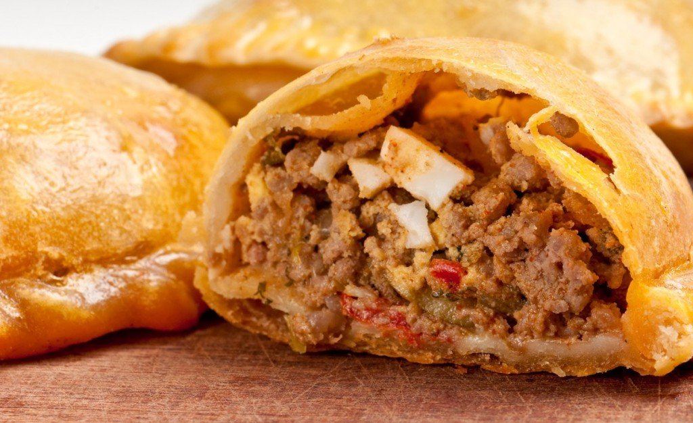

La principal característica es la gran diversidad de la carta local argentina: tanto en bebidas como en platos y dulces.Los platos argentinos combinan a la perfección el hecho de disfrutar de la gastronomía a la vez que se disfruta de reuniones entre familiares, amigos, y compañeros. En esta ocasión proponemos una lista de los mejores platos de la comida Argentina para disfrutar durante una visita al país:
Las empanadas son un típico pasa-bocas argentino, más popularmente conocido en el noreste del país. La empanada clásica está rellena de carne, humita (maíz) jamón y queso. El nombre de este plato es español y proviene del pan. Sin lugar a dudas una muy buena opción para tomar a media mañana o a media tarde.
